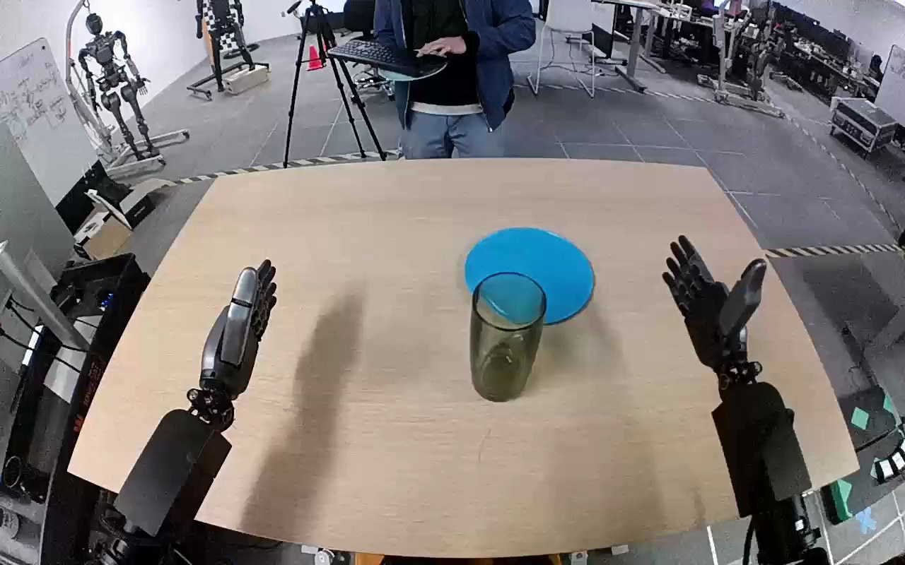

NVIDIA GR1 · 37
Video 37

Visual review action_review.json
{
"prompt_protocol": "humanoid_action_v1",
"prompt_provenance": "visually_authored_from_video_and_initial_frame",
"reviewed_contact_sheets": [
"sheet_001.jpg"
],
"inspected_frame_stride": 2,
"inspected_sampled_frame_count": 60,
"initial_scene": "Robot-centered forward/downward view over the table, with both forearms entering from the lower foreground. A tall translucent green cup stands in front of a blue plate. Both hands are initially open.",
"observed_sequence": [
{
"start_frame": 0,
"end_frame": 14,
"action": "Both hands remain open at either side of the table; the green cup stands on the table in front of the plate.",
"confidence": "high"
},
{
"start_frame": 15,
"end_frame": 43,
"action": "The right arm moves inward toward the cup with open fingers and thumb, positioning the hand around the upper cup; the left arm remains idle.",
"confidence": "high"
},
{
"start_frame": 44,
"end_frame": 61,
"action": "The right fingers and thumb close around the cup upper sides, securing the cup while its base initially remains near the tabletop.",
"confidence": "high"
},
{
"start_frame": 62,
"end_frame": 89,
"action": "The right hand lifts the cup clear of the table and transports it rearward over the blue plate, keeping it upright overall.",
"confidence": "high"
},
{
"start_frame": 90,
"end_frame": 111,
"action": "The right hand lowers the cup upright onto the near-right area of the blue plate and continues holding it while it settles.",
"confidence": "high"
},
{
"start_frame": 112,
"end_frame": 119,
"action": "The right fingers open and the hand lifts away; the cup remains standing upright on the plate.",
"confidence": "high"
}
],
"arm_hand_roles": {
"right": "Sole manipulating hand; closes fingers and thumb around the cup, lifts and transports it to the plate, lowers it, releases, and lifts clear.",
"left": "Remains open and idle at the lower-left side throughout; provides no support and receives no transfer.",
"coordination": "Single-hand task; no hand-to-hand transfer or human contact."
},
"anatomical_side_evidence": "The camera looks forward and down from between the robot arms: both forearms extend from the lower foreground toward the work surface, with the active forearm continuous to the robot-right lower side and the idle forearm on robot-left. This robot-centered orientation establishes image-right as anatomical right here; it is consistent with the original right-hand annotation rather than inferred from image position alone.",
"terminal_state": "Green cup stands upright on the blue plate; the right hand is open and visibly clear above/right of its rim, while the left hand remains idle.",
"uncertainties": [
"The exact first cup-base contact frame is partly obscured by the grasp and viewing angle; settled upright placement followed by visible release is established at the ending."
],
"annotation_discrepancies": [],
"evidence_frame_indices": [
0,
40,
58,
76,
98,
112,
119
],
"selected_execution_status": "success",
"video_id": "37",
"dataset": "NVIDIA_GR1_100",
"dedicated_review_agent": "review_gr1_37",
"review_source_video": "NVIDIA_GR1_100/37/original/original.mp4",
"source_frame_count": 120,
"source_fps": 20.0,
"native_detail_frames": [
40,
58,
76,
98,
112,
119
],
"world_model_prompt": "The robot uses its right hand to grasp the green cup around its upper sides, lift it from the table, and carry it over the blue plate. It lowers the cup upright onto the plate, opens its fingers to release it, and lifts the right hand clear, leaving the cup standing on the plate. Keep the camera fixed; preserve robot geometry, physically valid joint motion, and normal gripper opening and closing.",
"original_task_instruction": "Use the right hand to pick up green cup from tan table to blue plate.",
"selected_segment": {
"start_frame": 0,
"end_frame_exclusive": 120,
"reason": "Complete original single-task reference; no cropping or trimming requested."
},
"source_video_sha256": "615c6f2c15a8b719e5100059f5357b02d5a424225f13ef68442c645dd07d6d83",
"review_completed_at": "2026-10-13T18:01:05.347854+00:00"
}